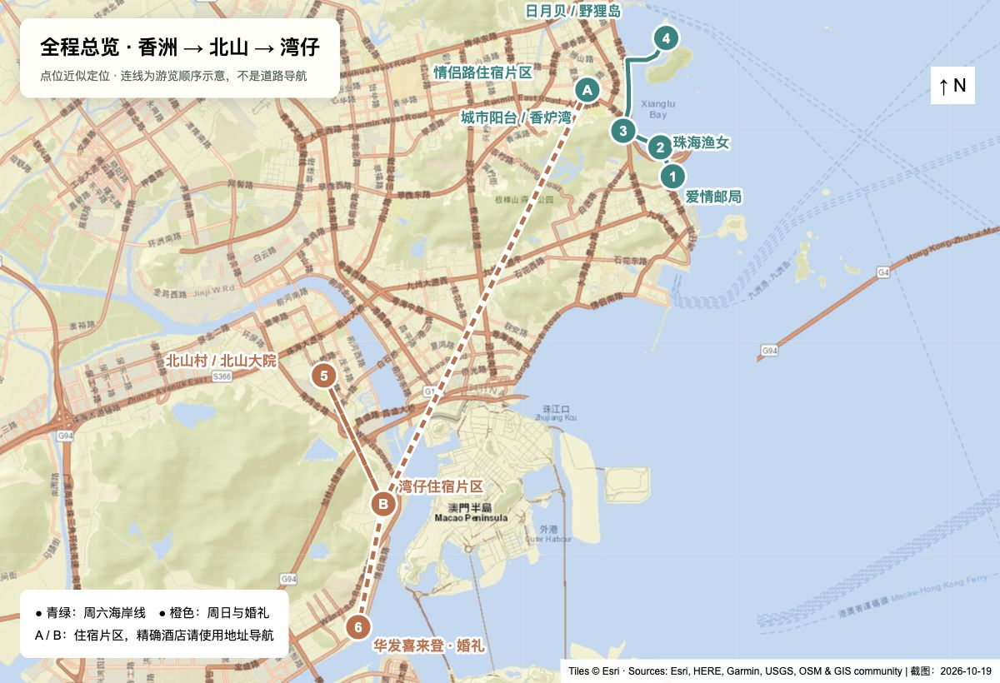

01 / 10.31 上午
爱情邮局与灯塔
在海边开启一天。拍灯塔、看沙滩，想寄明信片就顺路进店。
建议 45–60 分钟公共区域 ¥0
* 11月2日（周一）返程暂定，涉及工作日，请同行伙伴先确认。住宿、车票均未预订；酒店房价与指定日期房态待核实。资料核对：2026-10-19。
01 / ROUTE AT A GLANCE
先香洲海岸，再南下湾仔。
真实地图底图截图，叠加地点编号与游览顺序。

02 / LITTLE MOMENTS
以下为手绘风格景点示意，帮助辨认主题，
不是现场照片或建筑实测图。
在海边开启一天。拍灯塔、看沙滩，想寄明信片就顺路进店。
渔女拍照后，到城市阳台吃午饭。沙滩漫步不赶路，累了就坐下。
沿岛边散步，看双贝壳建筑从白天进入夜色，晚餐放在海韵城。
看老巷与杨氏大宗祠外观，在庭院喝杯咖啡；午餐后回酒店换衣。
03 / DAY BY DAY
时间是建议出发点，车程包含规划预留。
婚礼签到、交通与天气以实际情况为准。
大巴时长暂留3–4小时；晚到提前联系前台。查大巴 →
不要求全程走路。日月贝灯光以当日安排为准，不预设固定灯光秀。
先确认酒店可寄存；不预设上午能拿到房间。遇拥堵或婚礼提前，删减北山行程。
这是工作日。若需要周一上班，请先调整返程安排，不建议默认婚礼后能赶上末班车。
04 / STAY CLOSE
每间每晚含税实付≤¥300，是硬预算。
下面金额为预留，不是查到的实时售价。
凤凰南路1126号，扬名广场旁
两晚预算 ¥440–600。靠近老香洲与海岸，周六逛完日月贝回酒店方便。
电话：0756-3637777。仅已核实门店与地址；10/30、10/31房态及价格未核实。若超预算，换同片区≤300元门店。
南湾南路5000号，注意与5009号门店区分
一晚预算 ¥220–300。周日先寄存行李，下午入住，晚间打车赴宴。
酒店页面列有免费寄存、24小时前台，入住14:00后。11/1房态及价格未核实。超预算可查询江海路66号如家驿居，先确认营业与价格。
05 / TICKETS
本方案只安排公共空间、街区及建筑外观。
店内消费和特别活动不算在免费范围。
| 地点 | 本次玩法 | 门票 / 人 | 额外费用边界 |
|---|---|---|---|
| 爱情邮局 / 灯塔 | 公共海边、灯塔外观 | ¥0 | 明信片、邮资、饮品另付；不含登塔 |
| 珠海渔女 | 公共步道看雕塑 | ¥0 | 不含付费摄影或交通 |
| 城市阳台 / 香炉湾 | 公共观景区、沙滩漫步 | ¥0 | 餐饮、沙滩设备及临时活动另计 |
| 野狸岛 / 日月贝 | 公园、剧院建筑外观 | ¥0 | 不含剧院演出、收费场馆、租车 |
| 北山村 / 北山大院 | 街区散步、宗祠外观 | ¥0 | 店内展览、旧物仓、活动及咖啡另计 |
| 计划内门票合计 | ¥0 / 人 | 临时封闭或活动收费，以现场公告为准 | |
06 / SPLIT THE BILL
改人数、房间数和每晚预算，即时计算。
数字仅用于商量预算，不代表已预订。
每间按最多2位成人估算；多人出行需确认房型与实际入住政策。
2人同行 · 1间房 · 共3晚
全组总预算 ¥2,100 · 三晚总房费 ¥780
住宿总额以人数均摊，并不表示每位同伴都入住同一房间。
BEFORE WE GO
雨天备用：缩短海边步行，改逛城市阳台商场、扬名广场；周日下午保留酒店休息。
核对日期：2026-10-19。酒店是推荐候选，预算不是实时询价；车次、票价、天气、景点当日开放仍需出发前确认。
地图：Tiles © Esri · Sources: Esri, HERE, Garmin, USGS, Intermap, INCREMENT P, NRCan, Esri Japan, METI, Esri China (Hong Kong), Esri Korea, Esri (Thailand), NGCC, (c) OpenStreetMap contributors, and the GIS User Community。底图服务与完整来源。以Esri World Street Map真实地图瓦片制作底图并截取网页，再叠加近似点位、编号与游览顺序。点位来源包含公开地图数据；高德点位转换后近似标注。住宿用片区标记，未声称酒店门口精确定位。公共景点线路不等于驾车或步行路线；跨河、桥梁和道路通行以实时导航为准。
景点示意为原创SVG轮廓插画，不是实景照片。公开页面仅保留“深圳南山”出发，不含个人住址或婚礼参与人信息。